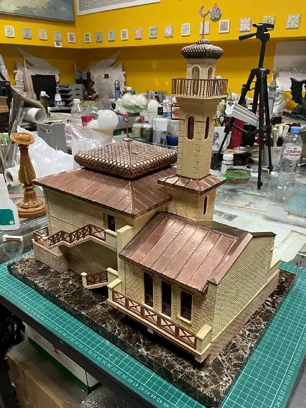

Исходные данные
Архитектурная геометрия и референсы объекта.
 ТехнопаркДизайн и инжинирингОбсудить задачу
ТехнопаркДизайн и инжинирингОбсудить задачу Архитектурные макеты
Воспроизвести архитектурный объект в уменьшенном масштабе, сохранив читаемость ключевых деталей.
Обсудить похожую задачу ↗
От замысла к результату
Архитектурная геометрия и референсы объекта.
Изготовлен детализированный физический макет мечети.
Материалы портфолио STEP_3D. Показан опыт команды в цифровом моделировании и изготовлении объектов.
Открыть публикациюОпишите назначение и ограничения. Вместе определим технологию и первый результат.
Обсудить с лабораторией ↗Все проекты →